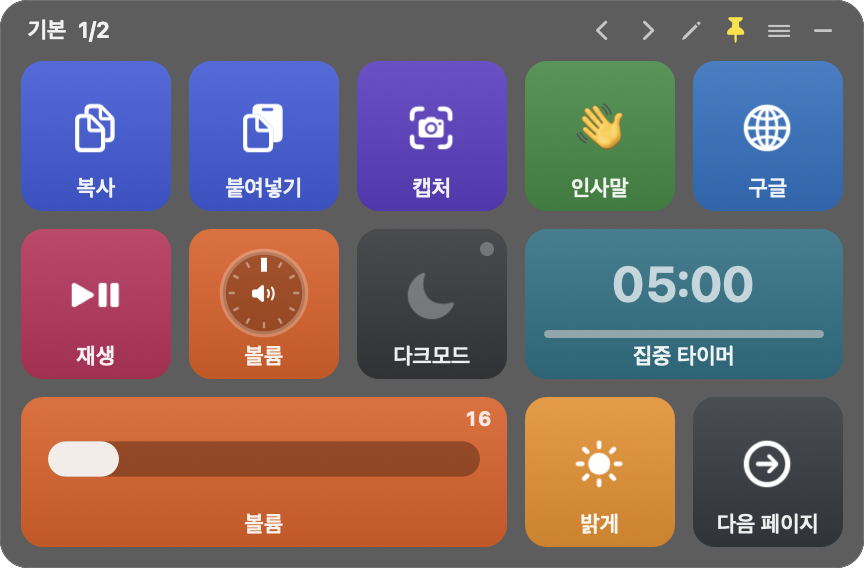
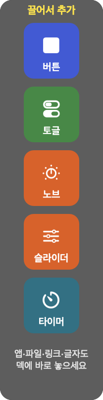
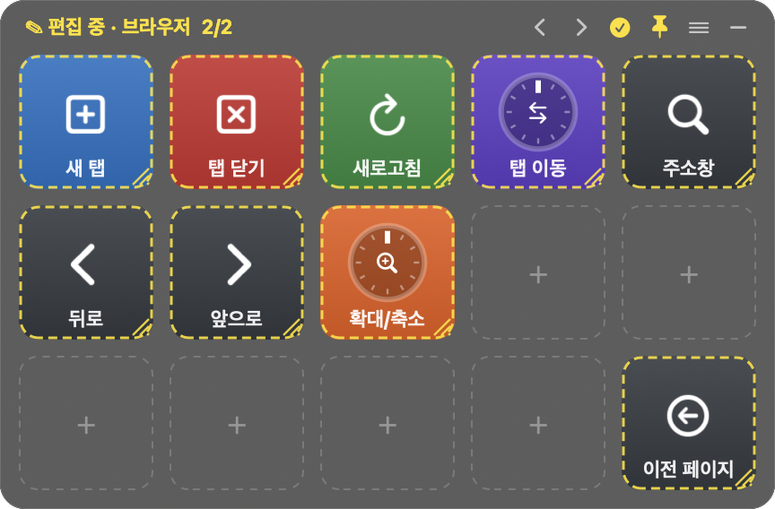
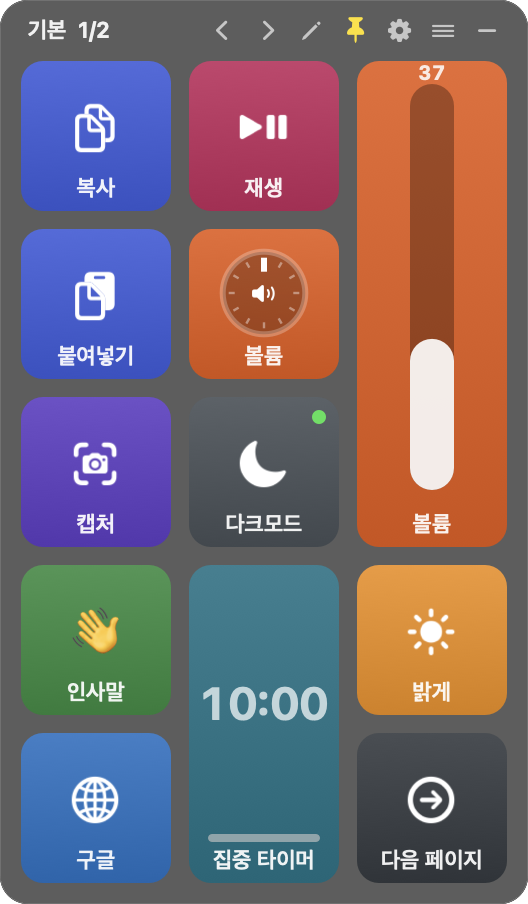
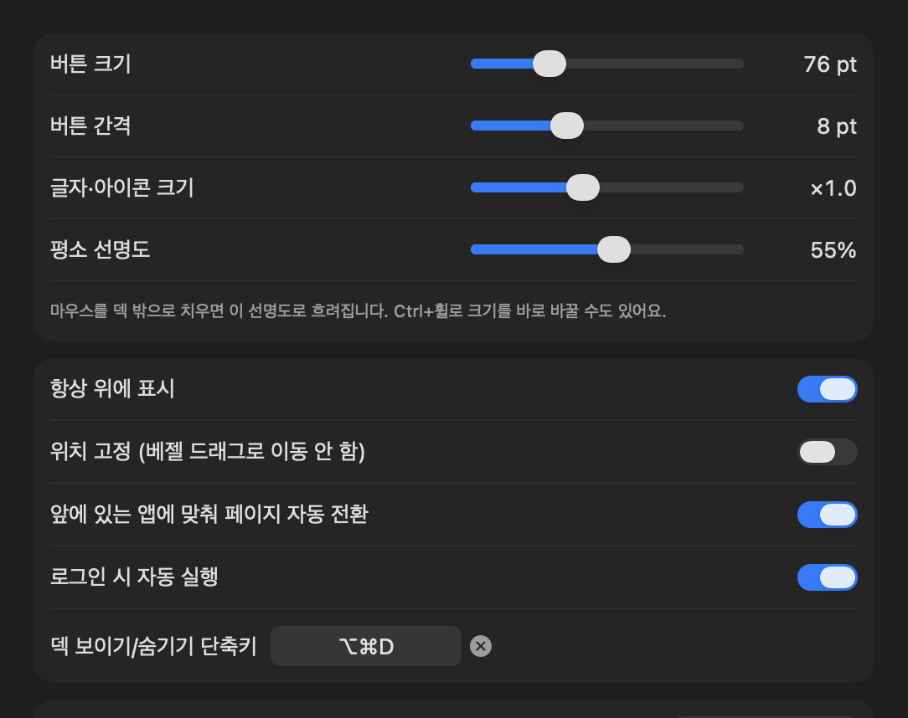

스트림덱은 버튼 하나에 단축키나 동작을 묶어 두는 장치입니다. EasyDeck은 이것을 화면 위에 떠 있는 버튼판으로 만든 무료 맥 앱입니다. 별도 장비를 살 필요가 없습니다.
EasyDeck.zip을 내려받습니다.EasyDeck.app을 응용 프로그램 폴더로 옮깁니다.메뉴 막대 오른쪽에 EasyDeck 아이콘이 생깁니다. Dock에는 나타나지 않습니다. ⌥⌘D를 누르면 덱을 보이거나 숨길 수 있습니다.
| 위치 | 하는 일 |
|---|---|
| 위쪽 띠 끌기 | 덱 옮기기 (설정에서 위치를 고정할 수 있음) |
| ‹ › 화살표 | 이전 / 다음 페이지 |
| 📌 핀 | 항상 위에 표시 켜기·끄기 |
| ≡ 메뉴 | 페이지 이동, 배치 바꾸기, 편집, 설정 등 모든 메뉴 |
| ✎ 연필 | 편집 모드 켜기·끄기 |
| ⚙︎ 톱니바퀴 | 설정 창 열기 |
| − 빼기 | 덱 숨기기 (⌥⌘D로 다시 보이기) |
| Ctrl + 휠 | 덱 전체 크기 키우기·줄이기 |
| 위젯 | 조작 |
|---|---|
| 버튼 | 클릭, 더블클릭, 길게 누르기(0.5초)에 각각 다른 동작을 넣을 수 있음 |
| 토글 | 누를 때마다 켜짐 / 꺼짐 동작을 번갈아 실행 |
| 노브 | 마우스 휠이나 위아래 끌기로 돌림 (음량 조절 등) |
| 슬라이더 | 끌어서 값 조절, 시스템 음량에 연결 가능 |
| 타이머 | 클릭하면 시작/정지, 휠로 시간 조절, 끝나면 알림 동작 실행 |
가장 쉬운 방법입니다. 무엇이든 덱에 끌어다 놓으면 버튼이 아이콘과 함께 생깁니다.
| 끌어 놓는 것 | 만들어지는 버튼 |
|---|---|
| Finder의 앱 | 그 앱을 여는 버튼 (앱 아이콘 그대로) |
| 파일 · 폴더 | 그 파일·폴더를 여는 버튼 |
| 브라우저 주소창의 링크 | 그 웹페이지를 여는 버튼 |
| 선택한 글자 | 그 글자를 입력하는 버튼 (긴 글은 붙여넣기로) |
| 이미지를 버튼 위에 | 그 버튼의 아이콘으로 사용 |

위쪽 띠의 ✎ 연필을 누르거나 메뉴 막대에서 편집 모드를 고르면 편집이 시작됩니다.

편집 모드에서 위젯을 한 번 클릭하거나, 아무 때나 위젯을 오른쪽 클릭 › 편집…을 고르면 편집 창이 열립니다.
sf:doc.on.doc), 이미지 파일, 이모지나 글자를 쓸 수 있습니다.key cmd+shift+4처럼 자동으로 적힙니다.≡ 메뉴 › 배치 바꾸기에서 덱 모양을 한 번에 바꿉니다. 모든 페이지에 함께 적용되고, 되돌리기로 바로 원래대로 돌아갑니다.

| 메뉴 | 결과 |
|---|---|
| 가로 한 줄 | 모든 위젯을 한 줄로 |
| 세로 한 줄 | 모든 위젯을 한 열로 |
| 가로↔세로 | 칸을 90도로 돌림 |
| 되돌리기 | 바로 전 배치로 |
page 이름 동작으로 페이지를 바꿉니다.
| 항목 | 설명 |
|---|---|
| 버튼 크기 · 간격 | 칸 하나의 크기와 칸 사이 간격 |
| 글자·아이콘 크기 | 버튼 안 글자와 아이콘 배율 |
| 평소 선명도 | 마우스를 치웠을 때 덱이 흐려지는 정도 |
| 항상 위에 표시 | 다른 창에 가려지지 않게 |
| 위치 고정 | 실수로 덱이 움직이지 않게 |
| 페이지 자동 전환 | 앞에 있는 앱에 맞춰 페이지 바꾸기 |
| 로그인 시 자동 실행 | 맥을 켜면 EasyDeck도 함께 시작 |
| 덱 보이기/숨기기 단축키 | 기본값 ⌥⌘D |
설정 창에서 프로필을 내보내기 / 가져오기할 수 있습니다. 다른 컴퓨터나 다른 섬김이와 덱 구성을 나눌 때 씁니다.
동작은 한 줄에 하나씩 적고, 위에서부터 차례로 실행됩니다.
| 적는 법 | 하는 일 |
|---|---|
key cmd+shift+4 | 단축키 (여러 개: key cmd+k cmd+s) |
type 안녕하세요\n반가워요 | 글자 입력 (\n 은 줄바꿈) |
paste 긴 문장 | 클립보드로 붙여넣기 (원래 클립보드는 복원) |
open https://… | 웹페이지 열기 |
open ~/Downloads | 폴더·파일 열기 |
open Safari | 앱 열기 (이름 또는 com.apple.Notes 같은 ID) |
shell say 안녕 | zsh 명령 실행 (창 없이) |
applescript beep | 애플스크립트 실행 |
shortcut 단축어이름 | 단축어 앱 실행 |
volume up|down|mute|50|+5|-5 | 음량 올리기·내리기·음소거·값 지정 |
media play|next|prev | 재생/일시정지 · 다음 곡 · 이전 곡 |
brightness up|down | 화면 밝기 |
darkmode toggle|on|off | 다크 모드 전환 |
delay 0.5 | 0.5초 기다리기 |
page 이름|next|prev|2 | 페이지 이동 |
layout row|column|flip|undo | 배치 바꾸기 |
notify 메시지 | 알림 띄우기 |
sound Glass | 소리 내기 |
deck hide|show|toggle | 덱 숨기기·보이기 |
# 주석 | 메모 (실행하지 않음) |
노브와 슬라이더의 값은 {value}로 동작에 넣을 수 있습니다. 예: volume {value}
| 버튼 | 동작 | 쓰임 |
|---|---|---|
| 다음 슬라이드 | key right | 자막·가사 넘기기 |
| 자막 지우기 | key esc | 화면 비우기 (프로그램 단축키에 맞춰 바꾸기) |
| 교회 이름 입력 | type 라온동행교회 | 자막 입력을 빠르게 |
| 방송 프로그램 | 앱을 끌어다 놓기 | 송출 프로그램 바로 열기 |
| 설교 타이머 | 타이머 위젯 30분 | 끝나면 알림 |
| 음량 | 슬라이더 + 시스템 음량 연결 | 모니터 소리 조절 |
시스템 설정 › 개인정보 보호 및 보안 › 손쉬운 사용에서 EasyDeck이 켜져 있는지 확인하세요. 켜져 있는데도 안 되면 목록에서 EasyDeck을 −로 지우고 +로 다시 추가한 뒤 앱을 다시 실행합니다. 스위치만 껐다 켜서는 해결되지 않습니다.
개인 서명 앱이라 그렇습니다. 앱을 오른쪽 클릭 › 열기를 누르세요.
'System Events' 제어 허용을 한 번 묻습니다. 허용하면 됩니다.
type이 한글 입력기 상태에 따라 드물게 어긋나면 paste를 쓰세요.~/Library/Application Support/EasyDeck/
profile.json: 페이지, 위젯, 동작, 설정. 직접 고치면 바로 반영되고, 형식이 깨지면 원본을 보관한 뒤 기본값으로 시작합니다.icons/: 추가한 아이콘 이미지EasyDeck.log: 실행 기록과 오류기본 배치로 되돌릴 때는 자동으로 백업을 남깁니다.